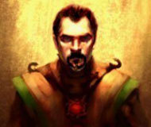
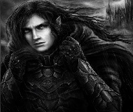

Il Re e i suoi Consiglieri

"Che la Legge regni, non l'uomo."
— al momento dell'incoronazione, 578 DE
Nato nell'anno 400 DE nelle campagne intorno ad Aral Maktar, Raziel Firelair visse una notte di terrore che lo privò della famiglia e lo segnò per sempre — lasciandogli sul braccio destro la cicatrice di un artiglio demoniaco. Giunto esausto alle porte della capitale, fu accolto da un fabbro che lo allevò come figlio. Nella fucina imparò a forgiare ferro e volontà, a leggere le leggi, a cercare la verità.
Partito per Bran Ator, divenne prima fabbro d'armi per le Legioni, poi Giudice Supremo della città. Nel 423 DE contribuì alla stesura del Codice delle Leggi Imperiali — ancora oggi considerato uno dei pilastri della civiltà di Landmar.
Per decenni percorse Landmar alla ricerca della verità sulla distruzione della sua famiglia, affrontando emanazioni del Caos e comprendendo che il male non si distrugge, si contiene. Governatore di Aral dal 528 al 578 DE, guidò le Legioni imperiali nella Guerra dell'Orda Nera contro Azog; affrontò i Templari corrotti di Gojir di Mezzaluna; resistette all'oscuramento dell'Imperatore Amshodaran. Nel 578 DE, per acclamazione nel Foro di Alisard, fu proclamato Re di Aral.
"Un esercito senza disciplina è solo una folla armata. E le folle non difendono le città."
Lou ha scalato i ranghi dei Dragoni Imperiali con una carriera che molti considerano il modello di ciò che l'Ordine dovrebbe rappresentare: rigore, lealtà e la capacità di mantenere la testa fredda quando il ferro canta. Nominato Generale per volontà diretta del Re, sovrintende all'organizzazione militare di Aral Maktar e alla difesa delle sue frontiere.
Uomo di poche parole e molti fatti, Lou è noto per condurre ispezioni senza preavviso e per pretendere dagli ufficiali lo stesso livello di preparazione che chiede alle reclute. I soldati lo temono e lo rispettano in egual misura — il segno, si dice ad Aral, di un buon comandante.

"La Garme non è un peso sul commercio. È la garanzia che il commercio valga qualcosa."
Galyn presiede la Garme — l'organo preposto alla regolamentazione e alla tassazione dei traffici commerciali di Aral Maktar — con la precisione di un orologiaio e la fermezza di un giudice. Sotto la sua guida, la Garme è diventata una delle istituzioni più temute e rispettate della capitale.
Diplomatico per natura ma inflessibile nei principi, Galyn è riuscito nell'impresa difficile di guadagnarsi la fiducia tanto del Re quanto dei mercanti, pur non cedendo mai a favoritismi. Il suo ufficio è aperto ogni mattina all'alba e chiude dopo il tramonto: un'abitudine, si dice, che ha adottato il primo giorno di mandato e non ha mai abbandonato.
"Se i numeri non tornano, c'è qualcuno che li ha fatti tornare. Troverò chi."
Valurd è il meccanismo interno della Garme: gestisce archivi, registri e verifiche con una meticolosità che i suoi collaboratori definiscono — a seconda del momento — ammirevole o estenuante. Nessun documento che passi per la Garme sfugge alla sua revisione, e nessuna discrepanza nei conti rimane irrisolta a lungo.
La sua fama di incorruttibilità lo ha reso inviso a più di un mercante disonesto e prezioso per il Re. Valurd non cerca onori né visibilità, ma chi conosce il funzionamento di Aral Maktar sa che senza di lui l'intera macchina amministrativa della Garme si incepperebbe nel giro di una settimana.
"Il sapere perduto non torna da solo. Va cercato, copiato, tradotto e custodito. Generazione dopo generazione."
Loraine guida l'Accademia delle Arti e delle Scienze di Aral Maktar con la stessa dedizione con cui un tempo ne era semplice studiosa. Arrivata giovane alla Biblioteca di Aral per studiare i testi superstiti dell'Impero Acheranide, vi rimase — prima come copista, poi come docente, infine come Rettrice.
Sotto la sua direzione, l'Accademia ha accolto studiosi da ogni angolo di Landmar, avviato scambi di manoscritti con le biblioteche di Bran Ator e Tyrion, e inaugurato il nuovo osservatorio astronomico. Loraine è anche nota per la sua corrispondenza con il Re, cui offre consulenza storica e diplomatica in materia di tradizioni eliantiriane.
"Chi nutre la città ha il diritto di sedersi al tavolo dove si decide il suo destino."
Taycom è cresciuto tra i campi che circondano Aral Maktar, figlio di agricoltori che per generazioni hanno coltivato le fertili pianure attorno alla capitale. Ha imparato il mestiere dalla terra prima che dai libri, e questa concretezza si riflette nel modo in cui presiede la Gilda del Sole: con i piedi ben piantati a terra e la voce ferma.
Negoziatore tenace, Taycom ha ottenuto dalla Corona importanti tutele per i membri della Gilda, tra cui la riduzione delle tasse sui prodotti agricoli nei periodi di carestia e il riconoscimento ufficiale degli alchimisti come categoria protetta. È benvoluto tanto dai locandieri quanto dai contadini — impresa non semplice, considerata la rivalità storica tra le due categorie.
"La pace non si mantiene pregando. Si mantiene facendo sì che nessuno voglia rompere quel che ci ha costato così caro costruire."
Theridion è il consigliere militare più anziano della corte di Aral Maktar. Veterano di campagne che molti preferirebbero dimenticare, porta sul corpo e nell'anima i segni di decenni passati a difendere i confini del regno. La sua nomina a Ministro della Guerra è stata accolta con sollievo dai comandanti sul campo e con qualche apprensione dai diplomatici.
Uomo di strategia tanto quanto di battaglia, Theridion sa quando conviene negoziare e quando è necessario combattere — e soprattutto sa che la differenza tra le due situazioni non è sempre ovvia. Lavora a stretto contatto con il Generale Lou Sol'Ek per coordinare le operazioni dei Dragoni, e con il Re per definire la politica di difesa del regno.